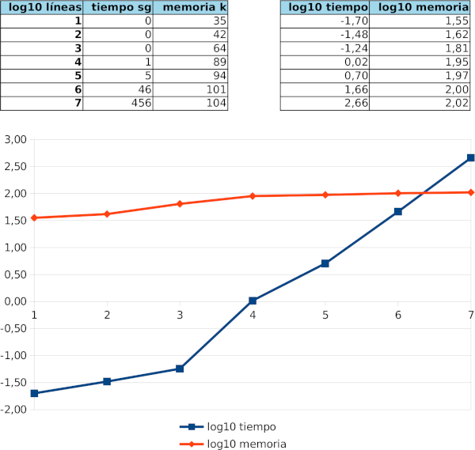

Real Java do notation
Nota: por brevedad y en general, cualquier afirmación en este blog
ADVERTENCIA, este post asume se conoce qué son y para que sirven las mónadas, en otro caso aunque entiendas todo lo que se expone, seguramente no entenderás su utilidad.
Java 8 Streams
Java 8 introdujo un buen número de elementos funcionales al lenguaje, entre ellos las mónadas Optional y Stream (con múltiples defectos, pero bueno). En Java son también bien conocidos los “builders”, básicamente objetos cuyos setters devuelven el resultado del seteo (normalmente la propia instancia pero no necesariamente). Ambas estructuras poseen un patrón común y es que tienden a generar un código de la forma (da igual el sentido, importa la sintáxis):
...
final Cosa cosa = new Cosa()
.setColor(VERDE)
.setHandler(OtraCosa::handlerPorDefecto)
...
.asReader()
.build();
...Las mónadas como Optional o Stream pueden fácilmente convertirse en un galimatías “lispiano” de la siguiente forma (ejemplos tomados por ahí):
Optional.of(new Outer())
.flatMap(o -> Optional.ofNullable(o.nested))
.flatMap(n -> Optional.ofNullable(n.inner))
.flatMap(i -> Optional.ofNullable(i.foo))
.ifPresent(System.out::println);o
Arrays.asList("a1", "a2", "b1", "c2", "c1")
.parallelStream()
.filter(s -> {
System.out.format("filter: %s [%s]\n",
s, Thread.currentThread().getName());
return true;
})
.map(s -> {
System.out.format("map: %s [%s]\n",
s, Thread.currentThread().getName());
return s.toUpperCase();
})
.sorted((s1, s2) -> {
System.out.format("sort: %s <> %s [%s]\n",
s1, s2, Thread.currentThread().getName());
return s1.compareTo(s2);
})
.forEach(s -> System.out.format("forEach: %s [%s]\n",
s, Thread.currentThread().getName()));o
IntStream.rangeClosed(0,9) /* 0 <= A <= 9 */
.parallel()
.mapToObj(Integer::valueOf)
.flatMap(a ->
IntStream.rangeClosed(0,9) /* 0 <= B <= 9 */
.mapToObj(Integer::valueOf)
.flatMap(b ->
IntStream.rangeClosed(0,9) /* 0 <= C <= 9 */
.mapToObj(c -> (new Product()).A(a).B(b).C(c))
)
).count();o similares.
Aunque éstos no son ejemplos demasiado enrevesados, se aprecia el problema con la sintáxis al estar obligados a definir lambdas.
.Net LINQ
De forma similar ocurre con .Net, cierto que posee la sintáxis especial para consultas LINQ que permiten definir y enlazar acciones monádicas, pero tiene problemas similares (ej. no puedes intercalar, fácilmente/legiblemente, bloques de código), hay restricciones al combinarlas, quedan identadas, etc…
Scala y Haskell
Si estás leyendo aún, lo mas probable es que ya conozcas el (feo) for/yield de Scala y la (elegante) “do notation” de Haskell.
¿Sería posible que lenguajes eminentemente orientados a objetos alojaran la elegante “do notation” de Haskell?
Pues sí.
Do Notation en Java
Para ponerte en contexto, introduzco aquí ya la notación obtenida.
Supón que tienes una función monádica como (usaré Stream por claridad):
Stream<Integer> algo(int a, int b, int c) {
@bind Integer x = IntStream.range(0, a).boxed().get();
@bind Integer y = IntStream.range(x, b).boxed().get();
@bind Integer z = IntStream.range(y, c).boxed().get();
return Stream.of(x + y + z);
}El @bind indica que la expresión es monádica, pero que queremos asignar un identificador (x, y y z en cada caso) a cada aplicación de la acción y usarla después. get únicamente nos sirve para indicar el tipo esperado.
El código anterior se expandiría (hago simplificación para que pueda compararse legibilidad) a:
Stream<Integer> algo(int a, int b, int c) {
return IntStream.range(0, a).boxed().flatMap(x ->
IntStream.range(x, b).boxed().flatMap(y ->
IntStream.range(y, c).boxed(). map(z -> x + y + z)));En general, se realiza la transformación desde:
...
@bind T x = m.k();
BLOCK;
return w;donde:
- T es el tipo contenido en la mónada.
- x es el identificador asociado al valor.
- m es una expresión monádica.
- k es el getter que permite representar de forma sintácticamente correcta el enlace.
- BLOCK es cualquier código de bloque en el scope de este enlace (por supuesto puede haber cualquier código por encima).
- w es la mónada resultado final (debe ser una mónada porque el resultado puedo no ser puro).
Lo cual se transformará en:
...
return m.k'((T x) -> {
BLOCK;
return w;
});donde:
- k’ es la acción monádica real (que viene del
@BindTodek).
Un sencillo ejemplo
Supón que tenemos un fichero con millones de línea y en cada línea varias ecuaciones de segundo grado. Nos piden tomar ese fichero y generar otro evaluando las ecuaciones, indicando error si el resultado es número complejo. Nos piden que el uso de memoria sea mínimo y que si una ecuación no puede calcularse se informe del error, nº de línea y posición.
Una forma de acarrear el estado éxito/error y poder combinarlo fácilmente es usando mónadas, en este ejemplo se usarán Optional, Stream y Either.
(Nota, las clases Optional y Stream son cerradas a la inclusión de un get para anotarlas con @BindTo, por lo que realmente han sido wrapeadas en tipo MOptional y MStream; véase el repositorio)
Evaluar una ecuación de segundo grado en el que no se admiten valores complejos, da como resultado un “quizás un número real”, es decir:
private static Optional<Double> solveQuadratic(double a, double b, double c) {
@bind Double r = of(b * b - 4. * a * c).filter(w -> w >= 0.).get();
return of((-b + Math.sqrt(r)) / (2. * a));
}Si la ecuación viene en formato texto y debemos parsearla, podemos tener errores tanto al parsear como después al evaluarla, las acciones monádicas nos permiten ignorar los errores salvo que lo deseemos (ej. para convertir o refinar un error en toEither):
private static Either<String, Double> solveQuadratic(final String equation) {
@bind String[] mx = parseRegex("^([\\+\\-\\.0-9]+)x\\^2([\\+\\-\\.0-9]+)x([\\+\\-\\.0-9]+)$", equation.replace(" ", "")).get();
@bind Double a = parseDouble(mx[1]).get();
@bind Double b = parseDouble(mx[2]).get();
@bind Double c = parseDouble(mx[3]).get();
return solveQuadratic(a, b, c).toEither("I don't know the imaginary numbers!");
}En general, un Stream no puede enumerarse, para ello deben usarse “hacks” como el siguiente, el cual ya te puedes imaginar qué tal legible quedaría en un anidamiento de flatMaps:
private static Stream<String> solveQuadratics(final Stream<String> lines) {
final AtomicInteger row = new AtomicInteger(0);
@bind String equations = lines.get();
row.incrementAndGet();
final AtomicInteger col = new AtomicInteger(0);
@bind String equation = Stream.of(equations.split(";")).get();
col.incrementAndGet();
final String result = solveQuadratic(equation)
.either(
e -> String.format("at %d,%d: %s", row.get(), col.get(), e),
x -> x.toString());
return Stream.of(result);
}Por último y aunque ésto ya no tiene nada que ver con el post, una lectura/escritura perezosa de ficheros gigantes:
private static void batch(final String inputFile, final String outputFile) throws IOException {
final File i = new File(inputFile);
final File o = new File(outputFile);
try (final InputStream is = new FileInputStream(i);
final BufferedReader br = new BufferedReader(new InputStreamReader(is));
final OutputStream os = new FileOutputStream(o);
final PrintWriter bw = new PrintWriter(new OutputStreamWriter(os))) {
solveQuadratics(from(br.lines())).forEach(bw::println);
}
}
public static void main(String... args) throws IOException {
if (args.length != 2)
System.err.printf("usage: do-notation-example input.equations output.equations%n");
else
batch(args[0], args[1]);
}Por ejemplo con entradas como:
-0.6005718616567053 x^2 + 0.15154725566778038 x + 0.1505222670492632; -0.1856515139096222 x^2 -0.2512588106349458 x -0.9273568738073994; -0.474643897361706 x^2 -0.7760360355116882 x + 0.7357293270431606; 0.690900526619453 x^2 -0.20895148552686682 x -8.117984617732765e-2
0.15106056207855567 x^2 + 0.810769035280229 x -0.39992991910765885; -0.3076352907485529 x^2 + 0.8152016354996694 x + 0.2504532359538494; -0.21475183628668515 x^2 + 1.626803536839616e-2 x + 0.7657361518929198; -0.6884644508167623 x^2 + 0.11053810499162853 x -0.6674127643678218; -0.7485930871907955 x^2 + 0.6709259594769152 x + 0.6422147555269133
-0.48667900914456186 x^2 -0.7585850484253822 x + 0.4533736693500501; -0.9733025900497643 x^2 -0.9884392198887242 x + 0.46587223360400865
0.6821590027536899 x^2 + 0.938386011461922 x -0.20844886486152703; 0.26593181923199727 x^2 + 0.19570217204974294 x + 4.266402319057949e-3; -0.9581839986890319 x^2 -0.7920479799651408 x -0.14350775059907916; -0.6292078757696296 x^2 + 0.6757728794274893 x + 3.435974062935521e-2; 7.164960720548841e-3 x^2 -0.4330467876850872 x -0.897257494741998
...Tenemos salidas como:
-0.3901158869207098
at 1,2: I don't know the imaginary numbers!
-2.306909085085579
at 1,4: string '0.690900526619453x^2-0.20895148552686682x-8.117984617732765e-2' do not match pattern '^([\+\-\.0-9]+)x\^2([\+\-\.0-9]+)x([\+\-\.0-9]+)$'
0.45474340224281307
-0.2780526182898415
at 2,3: string '-0.21475183628668515x^2+1.626803536839616e-2x+0.7657361518929198' do not match pattern '^([\+\-\.0-9]+)x\^2([\+\-\.0-9]+)x([\+\-\.0-9]+)$'
at 2,4: I don't know the imaginary numbers!
-0.5808123792505075
-2.019892706570561
...Y se observa que por un lado la complejidad es lineal y el consumo de memoria constante:

javac, AST y demás pócimas arcanas
Para introducir de forma adecuada la do notation en Java hemos tenido que modificar su semántica pero a la vez que su sintáxis siga intácta (para que el código pueda ser interpretado por cualquier software que desee interpretar nuestro código Java).
Desafortunadamente Java no posee una forma estándar de modificar la semántica, pero he aquí unos insconscientes intrépidos lombokianos que te permiten precisamente eso que necesitamos, modificar la semántica del lenguaje.
Para ello estos locos valientes hacen todo tipo de guarrerías subterfugios.
Así, borrachos de insensatez, hemos forkeado lombok, metido de lleno en las procelosas aguas de javac y amigos y, tras salir del laberinto del Fauno, obtenido los tres ansiados objetos mágicos:
- “El bueno”
@bind - “El malo”
@BindTo - “El feo”
HandleBind
Salvo que si quieres hackear lombok vas a tener que ser un poco cabezón, extendernos en el HandlerBind aquí no desviaría de nuestro objetivo, por tanto “El feo” se queda fuera.
Conclusión
El esquema indicado puede aplicarse a diversas mónadas y estructuras como los builders (un builder es un caso muy particular de mónada o más bien, con mónadas puede implementarse un builder). Además una misma mónada (clase) puede definir diferentes enlaces para diferentes tipos de “bindeo”. Tristemente, será complicado (¡ojalá!) ver composiciones similares @bind en estos lenguajes.
En cuanto a lombok me parece un banco muy interesante para realizar pruebas, pero es muy cuestionable su uso en códigos que esperen mantenerse durante un plazo indeterminado y/o cuyos entornos de despliegue puedan sufrir cambios.